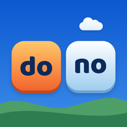

Dono: Hinglish Keyboard
iOS swaps every keyboard from the App Store for its own in password and phone-number fields. Dono comes back in the next field.
Press delete once right after the change: your word comes back and Dono keeps it from then on. You can also tap your word in the suggestion bar. To turn corrections off, open Dono › Typing › Autocorrect.
Tap the emoji key, then GIFs. Tap a GIF to copy it, then paste it in your message. GIF search needs Full Access and a connection.
Dono uses the iPhone's keyboard sound. Turn it on in Settings › Sounds & Haptics › Keyboard Feedback › Sound, and make sure the iPhone is not on silent. Haptics and sound also need Full Access.
They stay on your iPhone. With iCloud sync on, they also go to your own iCloud so your other iPhones learn them. See the list and remove words in Dono › Typing › Words Dono learned.
Dono keeps typing: every key, numbers, symbols, the emoji grid and GIF search. Suggestions, autocorrect, glide typing, learning, autofill and the clipboard list wait for the one-time unlock in the Dono app. Restore a purchase there too.
An app can turn off keyboards from the App Store, as some banking apps do. Apple's keyboard comes up there.
For help, bug reports or privacy questions, email aagrawal207@gmail.com.